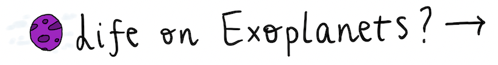

Beyond the Bowl: What do I mean by this? My recent curiosity with Stephen Hawking's work about where our universe began led me to read "The Grand Design," co-authored with Leonard Mlodinow, and Mlodinow's separate piece, "Stephen Hawking: A Memoir of Friendship and Physics". I found myself pondering deeper questions about our universe's origins. Are we fortunate to have just the right conditions for life on Earth? Or might the vastness of the universe host other life forms? One idea that resonated with me was the "fishbowl effect", the underlying idea has also been discussed in my Astrobiology class; this is the idea that a fish, due to its bowl's curved sides, perceives a skewed version of reality, governed by different physical laws (Hawking & Mlodinow, 2010). It suggests that our understanding of reality might also be limited or distorted. This prompted me to question our current understanding of life. Perhaps there are organisms that can survive in environments entirely different from what we're accustomed to.

During a recent assignment, I studied extremophiles in New Zealand's hot springs, using them as potential analogs for life on Mars. The findings were fascinating: extremophiles are astoundingly resilient, thriving in conditions inhospitable to humans. Could there be other life forms existing in environments we haven't yet considered? My microscopic investigation of life expanded to a macroscopic scale: exoplanets. The "Goldilocks zone" is an intriguing concept, indicating the 'just right' distance from a star where liquid water—crucial for life as we know it—could exist. Yet, as extremophiles demonstrate, life's potential extends beyond just location. As scientists’ further study exoplanetary atmospheres, combined with our understanding of extremophiles, we inch closer to addressing the timeless question: are we alone in the universe?

Both Hawking and Mlodinow excel at presenting deep physics concepts (although as Mlodinow stated in his memoir about Hawking, this was very difficult for Stephen to do – I giggled at this) in a relatable manner. To me, this embodies interdisciplinary knowledge— which I have learnt is the essence of astrobiology's nature. In my Astrobiology lectures at the University of Auckland, I've been exposed to various technologies used in the quest for extra-terrestrial life; many employ solid computer science principles. Noticing these intersections between my degree and the wonderfully exciting field of astrobiology has been enlightening. Such overlaps facilitate the creation of tools that might one day simulate exoplanetary ecosystems, refine habitable zone predictions, or even decipher extra-terrestrial biosignatures from afar. I read about exoplanet bio-signatures in “Exoplanet Biosignatures: A Review of Remotely Detectable Signs of Life” (Schwieterman, 2018). In the article, a discussion of gaseous biosignatures and implications of false positives led me to think about how the principles and technologies of computer science could be advanced to improve the experimental study in this area. Data from telescopes like Kepler and TESS undergo complex computational analyses (Brennan, 2023). This exciting juncture of computer science and astrobiology enriches both my academic pursuits of Computer Science and my broader exploration of potential life in the universe. Just as the richness and diversity of backgrounds that are unified in Auckland fascinates me, the possibility of extra-terrestrial life deepens this appreciation to a much larger scale. For society at large, the discovery of life elsewhere can redefine our understanding of interconnectedness and community. It is important to think about as it may push us to revaluate the copious divisions we have on Earth and appreciate that we are unified in our cosmic journey. On a universal scale, the quest for life on exoplanets and being open to different prerequisites for life highlight the potential tapestry of life across many galaxies. Every star could be a sun to another world. We on Earth, a tiny fragment of the universe, might share it with countless others; the discovery of this would reshape our perceived role as humanity in the cosmos.
This study and reflective piece will explore current efforts in the field of astrobiology to search for life on exoplanets and its implications. Additionally, it will encourage deeper contemplation on the possibility that life might thrive under conditions strikingly different from what we're familiar with, therefore we may need to adapt and refine these current methods to accommodate the search for diverse life forms.
